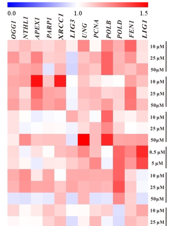

Flap endonuclease 1 (FEN-1) is a structure-specific nuclease in the XPG/RAD2 family with dual 5'-flap endonuclease and 5'-3' exonuclease activities. It is essential for Okazaki fragment maturation during lagging-strand DNA replication (cleaving displaced 5'-flaps to produce ligatable nicks) and for long-patch base excision repair (trimming flaps generated by strand displacement synthesis). FEN1 also exhibits RNase H activity on RNA-DNA hybrids, contributing to RNA primer removal. The enzyme requires two magnesium ions for catalysis and interacts with PCNA to coordinate its activity at replication forks and repair sites. FEN1 localizes to the nucleolus (for rDNA maintenance), the nucleoplasm (upon DNA damage), and mitochondria (for mtDNA repair). In zebrafish, fen1 is essential for early development, and insertional mutants display severe retinal defects with reduced and disorganized retinal neurons, reflecting the high proliferative demand of retinal progenitor cells.
| GO Term | Evidence | Action | Reason |
|---|---|---|---|
|
GO:0005634
nucleus
|
IBA
GO_REF:0000033 |
ACCEPT |
Summary: FEN1 is a nuclear protein. The IBA annotation is supported by phylogenetic inference from well-characterized orthologs in yeast (Rad27) and mammals. UniProt confirms nuclear localization (nucleolus and nucleoplasm) based on HAMAP rule transfer.
Supporting Evidence:
PMID:18443037
FEN1 migrates into the nucleus in response to DNA damage and under certain cell cycle conditions
file:DANRE/fen1/fen1-deep-research-falcon.md
the functional interpretation that FEN1 acts primarily in the **nucleus at replication/repair sites**, rather than as a soluble enzyme
|
|
GO:0017108
5'-flap endonuclease activity
|
IBA
GO_REF:0000033 |
ACCEPT |
Summary: 5'-flap endonuclease activity is the defining molecular function of FEN1. The enzyme enters the 5'-end of a flap, tracks to the flap base, and makes a single endonucleolytic cut at the junction between single- and double-stranded DNA. This is the core catalytic activity of the protein.
Supporting Evidence:
PMID:23451868
First discovered as a structure-specific endonuclease that evolved to cut at the base of single-stranded flaps
file:DANRE/fen1/fen1-deep-research-bioreason-sft.md
See BioReason SFT trace for domain-to-function reasoning
file:DANRE/fen1/fen1-deep-research-falcon.md
FEN1 catalyzes **hydrolytic cleavage of phosphodiester bonds** in **5′-flap** (and related nick/gap) substrates, producing ligatable nicked DNA products in replication and repair intermediates
|
|
GO:0008409
5'-3' exonuclease activity
|
IBA
GO_REF:0000033 |
ACCEPT |
Summary: FEN1 possesses 5'-3' exonuclease activity on nicked or gapped double-stranded DNA, which is a well-characterized second catalytic mode of the enzyme. This activity requires occupancy of both divalent metal binding sites.
Supporting Evidence:
PMID:23451868
The polymerase and 5′ nuclease act together to carry out a process called nick translation, in which the 5′ side of a nick in DNA is degraded while the 3′ side is extended
file:DANRE/fen1/fen1-deep-research-falcon.md
three biochemically distinguishable nuclease activities described in the literature: **flap endonuclease (FEN)**, **5′ exonuclease (EXO)**, and **gap endonuclease (GEN)**
file:DANRE/fen1/fen1-deep-research-falcon.md
exonuclease activity contributes to editing/removal of Pol α errors during Okazaki fragment maturation, helping prevent mutagenesis when nascent lagging strands are processed
|
|
GO:0000287
magnesium ion binding
|
IBA
GO_REF:0000033 |
ACCEPT |
Summary: FEN1 binds two magnesium ions per subunit that are essential for catalysis. The active site acidic residues coordinate these ions to hydrolyze phosphodiester bonds. A third magnesium ion may bind after substrate engagement.
Supporting Evidence:
PMID:18697748
the T5FEN-catalyzed reaction requires at least three magnesium ions, implying that an additional metal ion is bound
file:DANRE/fen1/fen1-deep-research-falcon.md
hydrolyzes phosphodiester bonds using a **two-metal (Mg2+) catalytic center** typical for this nuclease class
file:DANRE/fen1/fen1-deep-research-falcon.md
catalytic metal-binding residues include E158, E160, D179, D181
|
|
GO:0004523
RNA-DNA hybrid ribonuclease activity
|
IBA
GO_REF:0000033 |
ACCEPT |
Summary: FEN1 exhibits RNase H-like activity, cleaving RNA from RNA-DNA hybrids. This activity is relevant to its role in Okazaki fragment processing where RNA primers are displaced into flap structures. Well supported by phylogenetic inference and biochemical studies on orthologs.
Supporting Evidence:
PMID:23451868
the RNA primer is displaced into a 5' flap and then cleaved off
|
|
GO:0030145
manganese ion binding
|
IBA
GO_REF:0000033 |
KEEP AS NON CORE |
Summary: FEN1 can use manganese as an alternative divalent cation cofactor for catalysis. Mn2+ supports both endonuclease and exonuclease activities. This is a secondary cofactor preference; Mg2+ is the physiologically relevant ion.
Reason: While Mn2+ supports FEN1 catalysis in vitro, Mg2+ is the physiological cofactor. Mn2+ binding is real but not a core evolved function.
Supporting Evidence:
PMID:18697748
a requirement for two viable cofactors (Mg2+ or Mn2+)
|
|
GO:0000287
magnesium ion binding
|
IEA
GO_REF:0000104 |
ACCEPT |
Summary: Duplicates the IBA annotation for magnesium ion binding. Correctly inferred by UniRule transfer from characterized orthologs. FEN1 requires two Mg2+ ions for catalysis.
Supporting Evidence:
PMID:18697748
The presence of at least two ions bound with differing affinity is required to catalyze phosphate diester hydrolysis
|
|
GO:0003677
DNA binding
|
IEA
GO_REF:0000120 |
KEEP AS NON CORE |
Summary: FEN1 binds DNA through multiple contacts including the XPG N- and I-domains and the helix-hairpin-helix (HhH2) motif. DNA binding is integral to its nuclease function. The annotation is correct but generic; the more informative annotations are the specific nuclease activities.
Reason: DNA binding is accurate but less informative than the specific 5'-flap endonuclease and exonuclease activity annotations. It is a prerequisite for catalysis rather than the core function itself.
Supporting Evidence:
PMID:23451868
FEN1 binds to the flap base and then threads the 5' end of the flap through its helical arch and active site to create a configuration for cleavage
|
|
GO:0003824
catalytic activity
|
IEA
GO_REF:0000002 |
MODIFY |
Summary: This is a very generic InterPro2GO annotation from the HhH2 domain (IPR008918). FEN1 is indeed catalytically active, but the specific nuclease activities (5'-flap endonuclease, 5'-3' exonuclease) are far more informative.
Reason: Too generic. The specific nuclease activities already annotated are more appropriate.
Proposed replacements:
5'-flap endonuclease activity
|
|
GO:0004518
nuclease activity
|
IEA
GO_REF:0000002 |
MODIFY |
Summary: InterPro2GO annotation from XPG domains (IPR006085, IPR006086). FEN1 is a nuclease, but the specific 5'-flap endonuclease and 5'-3' exonuclease terms are more informative.
Reason: Correct but too generic. More specific nuclease terms are already annotated.
Proposed replacements:
5'-flap endonuclease activity
|
|
GO:0005634
nucleus
|
IEA
GO_REF:0000104 |
ACCEPT |
Summary: Duplicates the IBA nucleus annotation. Correctly inferred by UniRule. FEN1 is a nuclear protein that localizes to the nucleolus and nucleoplasm.
Supporting Evidence:
PMID:18443037
FEN1 is superaccumulated in the nucleolus and plays a role in the resolution of stalled DNA replication forks
|
|
GO:0005654
nucleoplasm
|
IEA
GO_REF:0000044 |
ACCEPT |
Summary: FEN1 relocalizes to the nucleoplasm from the nucleolus upon DNA damage. This relocalization is mediated by phosphorylation. Correctly inferred from UniProt subcellular location vocabulary.
Supporting Evidence:
PMID:18443037
In response to UV irradiation and upon phosphorylation, FEN1 migrates to nuclear plasma to participate in the resolution of UV cross-links on DNA
|
|
GO:0005730
nucleolus
|
IEA
GO_REF:0000044 |
ACCEPT |
Summary: FEN1 super-accumulates in the nucleolus where it maintains stability of ribosomal DNA tandem repeats. This is its primary nuclear location under normal conditions.
Supporting Evidence:
PMID:18443037
FEN1 is superaccumulated in the nucleolus and plays a role in the resolution of stalled DNA replication forks formed at the sites of natural replication fork barriers
|
|
GO:0005739
mitochondrion
|
IEA
GO_REF:0000120 |
ACCEPT |
Summary: FEN1 localizes to mitochondria where it participates in mitochondrial DNA replication and repair. This has been demonstrated in both yeast (Rad27) and mammals.
Supporting Evidence:
PMID:19699691
Rad27p/FEN1 is localized in the mitochondrial compartment of both yeast and mice and that Rad27p has a significant role in maintaining mtDNA integrity
|
|
GO:0006284
base-excision repair
|
IEA
GO_REF:0000104 |
ACCEPT |
Summary: FEN1 plays a critical role in long-patch base excision repair (LP-BER), trimming
the 5'-flap structures generated when DNA polymerase performs strand displacement synthesis
after AP site incision. This is one of the two core biological processes for FEN1. Falcon
deep research adds the only direct zebrafish-specific support for this process. A zebrafish
ecotoxicology qPCR study reports significant induction of zebrafish fen1 mRNA among BER
pathway genes under oxidative/DNA-damaging chemical stress, consistent with the canonical
LP-BER role inferred by orthology.
Supporting Evidence:
PMID:15189154
in long-patch base excision repair, a damaged nucleotide is displaced into a flap and removed by FEN1
PMID:12861020
Flap endonuclease 1 (FEN1) has been shown to remove 5' overhanging flap intermediates during base excision repair and to process the 5' ends of Okazaki fragments during lagging-strand DNA replication in vitro
file:DANRE/fen1/fen1-deep-research-falcon.md
FEN1 is repeatedly described as a core LP-BER flap nuclease
file:DANRE/fen1/fen1-deep-research-falcon.md
The paper’s zebrafish qPCR figures (heatmap and bar plots) show **significant fen1 upregulation** in zebrafish under multiple exposure conditions
|
|
GO:0008409
5'-3' exonuclease activity
|
IEA
GO_REF:0000104 |
ACCEPT |
Summary: Duplicates the IBA annotation for 5'-3' exonuclease activity. Correctly inferred by UniRule transfer. This is a core catalytic activity of FEN1.
Supporting Evidence:
PMID:15189154
FEN1 is a genome stabilization factor that prevents flaps from equilibrating into structures that lead to duplications and deletions
|
|
GO:0016788
hydrolase activity, acting on ester bonds
|
IEA
GO_REF:0000002 |
MODIFY |
Summary: InterPro2GO annotation from XPG conserved site (IPR019974) and Flap endonuclease 1 family (IPR023426). FEN1 is a phosphodiesterase that hydrolyzes phosphoester bonds in DNA. Correct but very generic.
Reason: Too generic. The specific nuclease activities are more informative and already annotated.
Proposed replacements:
5'-flap endonuclease activity
|
|
GO:0017108
5'-flap endonuclease activity
|
IEA
GO_REF:0000104 |
ACCEPT |
Summary: Duplicates the IBA annotation for 5'-flap endonuclease activity. Correctly inferred by UniRule transfer. This is the defining molecular function of FEN1.
Supporting Evidence:
PMID:23451868
Substrate specificity allows FEN1 to process intermediates of Okazaki fragment maturation, long-patch base excision repair, telomere maintenance, and stalled replication fork rescue
file:DANRE/fen1/fen1-deep-research-falcon.md
describes FEN1 as the **primary endonuclease** that cleaves these short RNA–DNA/DNA flaps to enable Okazaki fragment joining
file:DANRE/fen1/fen1-deep-research-falcon.md
PCNA is reported to increase FEN1 activity by approximately **~10–50-fold**
|
|
GO:0043137
DNA replication, removal of RNA primer
|
IEA
GO_REF:0000104 |
ACCEPT |
Summary: FEN1 participates in RNA primer removal during Okazaki fragment maturation, working in concert with RNase H. This is a core biological process directly linked to its 5'-flap endonuclease activity during lagging-strand DNA replication.
Supporting Evidence:
PMID:23451868
FEN1 recognizes this structure, binds to the base of the flap, and precisely cleaves it, removing the RNA and some portion of the initiator DNA to make a nick
file:DANRE/fen1/fen1-deep-research-falcon.md
FEN1 removes flap/nick intermediates iteratively in coordination with RNaseH2 and PCNA to complete primer removal and ligation-ready processing
|
|
GO:0060041
retina development in camera-type eye
|
IMP
PMID:15716491 Identification of zebrafish insertional mutants with defects... |
KEEP AS NON CORE |
Summary: The zebrafish fen1 insertional mutant (from the Hopkins lab large-scale mutagenesis screen) has drastically smaller eyes with defects in the number and organization of retinal neurons at 5 dpf. Retinal patterning is severely affected, particularly in the outer retina. The mutant differentiates retinal ganglion cells but with a thinner optic nerve and reduced, chaotically distributed amacrine cells. This is the only direct experimental evidence (IMP) for zebrafish fen1 and likely reflects pleiotropic consequences of impaired DNA replication in highly proliferative retinal progenitors.
Reason: This is a valid IMP annotation from a zebrafish mutagenesis screen. However, retinal
development is not a core evolved function of FEN1; it is a pleiotropic consequence of
disrupting an essential DNA replication and repair enzyme in a tissue with high proliferative
demand. The annotation should be retained as it documents a genuine zebrafish-specific
phenotype. Falcon deep research independently reaches the same conclusion, noting that
direct zebrafish fen1 loss-of-function genetics were not retrieved and that the primary
functional annotation for zebrafish fen1 is best supported by orthology-informed mechanism
rather than a dedicated retinal-developmental role.
Supporting Evidence:
PMID:15716491
Forty loci whose disruption resulted in defects in eye development and/or visual function were identified
file:DANRE/fen1/fen1-deep-research-falcon.md
Direct zebrafish functional genetics (loss-of-function phenotypes of fen1) were not retrieved
file:DANRE/fen1/fen1-deep-research-falcon.md
the **primary functional annotation** for zebrafish fen1 is best supported by **orthology-informed mechanism**
|
Experiment: Direct biochemical characterization of zebrafish FEN1 nuclease activities (endonuclease and exonuclease) to confirm that the zebrafish protein retains the same catalytic properties as mammalian FEN1. Currently all molecular function annotations are transferred by homology (IBA/IEA) with no direct experimental evidence on the zebrafish protein.
Type: Biochemical characterization
Experiment: Spatiotemporal expression analysis of fen1 during zebrafish retinal development to understand why the retina is particularly sensitive to fen1 loss-of-function, given that fen1 is expected to be ubiquitously required for DNA replication.
Type: Expression analysis
I begin with the InterPro architecture. The polypeptide is dominated by XPG/Rad2 nuclease signatures: IPR006084 (XPG/Rad2 endonuclease family, residues 1–357) and the more specific IPR023426 (Flap endonuclease 1 family, residues 1–345) define the enzyme class and substrate preference. The N-terminus contains IPR006085 (XPG, N-terminal domain, residues 1–107), which houses catalytic and metal-binding residues for the nuclease core. Multiple overlapping XPG/Rad2 family motifs punctuate this region and the adjacent IPR006086 (XPG-I domain, residues 146–218; also detected as residues 149–233), forming the paired N and I subdomains that clamp DNA and position the scissile phosphate. These include IPR019974 (XPG conserved site, residues 79–93) and additional conserved motifs at residues 149–163 and 166–186, which together create the acidic residues that coordinate divalent metal ions and the helix-hairpin-helix elements that stabilize the DNA backbone. The catalytic core is further supported by IPR029060 (PIN-like domain superfamily, residues 2–233), a nuclease fold that contributes the metal-chelating geometry, and by IPR008918 (Helix-hairpin-helix motif, class 2, residues 220–253), which provides non-sequence-specific DNA binding and bends the duplex near the junction. The C-terminal region is captured by IPR036279 (5'-3' exonuclease, C-terminal domain superfamily, residues 218–351), a regulatory and DNA-binding module that recognizes 5'-flap architecture and stimulates catalysis. Together, these domains assemble the canonical Rad2/XPG-like nuclease that incises 5'-flaps at single-strand/double-strand junctions and also supports 5'→3' exonucleolytic degradation on nicked or gapped duplex DNA.
This domain architecture causes a precise molecular function: GO:0017108 5'-flap endonuclease activity. The XPG-N/I composite active site, reinforced by the HhH motif, binds a 5'-flap and introduces a single endonucleolytic cut 5' to the branch, leaving a ligatable nick. The C-terminal superfamily domain enhances recognition and positioning of the flap stem, while the PIN-like fold coordinates catalytic metal ions to hydrolyze the phosphodiester bond. The same structural features enable processive 5'→3' exonucleolysis on nicked or gapped duplexes, consistent with a distributive-to-processive switch depending on DNA context and partner binding.
From this chemistry, the biological processes follow. During lagging-strand DNA replication, displacement synthesis by DNA polymerase generates 5'-flaps on downstream Okazaki fragments; this nuclease resolves those flaps to enable ligation, placing it in DNA replication and specifically Okazaki fragment processing. In base-excision repair, long-patch BER creates 5'-flaps after gap filling; the enzyme trims these flaps to complete repair, aligning with base-excision repair and long-patch BER. Its ability to incise at ssDNA–dsDNA junctions and to degrade 5'-protrusions also supports DNA recombination and the processing of recombination intermediates. The same incision and resection activities contribute to double-strand break repair, including homologous recombination and nonhomologous end joining interfaces that require flap and overhang management. In metazoan tissues, such genome-maintenance activities are essential for proliferative and differentiating cells; thus, defects manifest in organogenesis, including retina development in the camera-type eye, where precise DNA repair and replication are required for photoreceptor and retinal pigment epithelium maturation.
The cellular component is dictated by the need to access chromosomal DNA and replication factories. The presence of nuclear-targeted DNA repair and replication roles, together with the regulatory C-terminal domain that engages replication clamps, places the enzyme in the GO:0005634 nucleus. The architecture lacks transmembrane segments or secretion signals, reinforcing a soluble nuclear localization.
Mechanistically, the enzyme likely operates within multi-protein assemblies. The C-terminal domain and HhH-mediated DNA engagement allow it to be clamped by the sliding clamp PCNA, which increases processivity and coordinates handoff to DNA ligase. DNA polymerase delta and its regulatory subunits generate the 5'-flaps that this nuclease removes; DNA polymerase beta participates in long-patch BER where the same flap-removal step is required. Helicase/nuclease Dna2 and the RecQ helicase WRN create or extend DNA flaps and suppress toxic recombination intermediates; the nuclease can then trim or process these structures. AP endonuclease (DNA-(apurinic or apyrimidinic site) lyase) generates entry points for repair synthesis that culminate in flap formation, which this enzyme resolves. In double-strand break contexts, coordination with XRCC1-like scaffolds and double-strand break repair proteins organizes repair tracts where flap processing is needed. Altogether, the domain architecture and partner repertoire support a model in which the enzyme is a nuclear 5'-flap endonuclease and 5'→3' exonuclease that acts at replication forks, BER patches, and recombination/DSB sites to maintain genome integrity and enable proper tissue development, including the retina.
## Functional Summary
A nuclear nuclease that removes 5′ flaps and degrades 5′ ends to resolve replication and repair intermediates. During lagging-strand synthesis it cleaves displaced DNA on Okazaki fragments, and in long-patch base-excision repair it trims flap structures created after gap filling. Its incision at single- to double-strand junctions and exonucleolytic processing of nicked or gapped duplexes support recombination and double-strand break repair. By coordinating with sliding clamps, polymerases, helicases, and ligases, it ensures accurate maturation of DNA ends, a role that underpins genome stability and contributes to proper development of tissues such as the retina.
## UniProt Summary
Key enzyme involved in DNA replication and repair. Has 5'-flap endonuclease activity during DNA replication of the lagging strand: tracks along the 5'-end of a flap structure emerging from the displacement synthesis of the downstream Okazaki fragment and cleaves the flap structure at the junction with the leading strand (By similarity). Has a 5'--> 3'-exonuclease activity on nicked or gapped double-stranded DNA (By similarity). Also involved in the repair of DNA double-strand breaks by non-homologous end joining (NHEJ) and homologous recombination (By similarity). Has endonuclease activity towards double-stranded DNA with a single-strand gap, introducing a cut near the junction between the single- and double-stranded sections (By similarity). Has exonuclease activity on nicked or gapped double-stranded DNA (By similarity).
## InterPro Domains
- IPR006084: XPG/Rad2 endonuclease (family) [1-357]
- IPR006085: XPG, N-terminal (domain) [1-107]
- IPR023426: Flap endonuclease 1 (family) [1-345]
- IPR029060: PIN-like domain superfamily (homologous_superfamily) [2-233]
- IPR006084: XPG/Rad2 endonuclease (family) [28-42]
- IPR019974: XPG conserved site (conserved_site) [79-93]
- IPR006084: XPG/Rad2 endonuclease (family) [81-100]
- IPR006084: XPG/Rad2 endonuclease (family) [145-162]
- IPR006086: XPG-I domain (domain) [146-218]
- IPR006086: XPG-I domain (domain) [149-233]
- IPR019974: XPG conserved site (conserved_site) [149-163]
- IPR006084: XPG/Rad2 endonuclease (family) [166-186]
- IPR036279: 5'-3' exonuclease, C-terminal domain superfamily (homologous_superfamily) [218-351]
- IPR008918: Helix-hairpin-helix motif, class 2 (conserved_site) [220-253]
- IPR006084: XPG/Rad2 endonuclease (family) [223-238]
## GO Term Predictions
### Molecular Function
### Biological Process
### Cellular Component
The research report should be a detailed narrative explaining the function, biological processes, and localization of the gene product. Citations should be given for all claims.
You should prioritize authoritative reviews and primary scientific literature when conducting research. You can supplement
this with annotations you find in gene/protein databases, but these can be outdated or inaccurate.
We are specifically interested in the primary function of the gene - for enzymes, what reaction is catalyzed, and what is the substrate specificity? For transporters, what is the substrate? For structural proteins or adapters, what is the broader structural role? For signaling molecules, what is the role in the pathway.
We are interested in where in or outside the cell the gene product carries out its function.
We are also interested in the signaling or biochemical pathways in which the gene functions. We are less interested in broad pleiotropic effects, except where these elucidate the precise role.
Include evidence where possible. We are interested in both experimental evidence as well as inference from structure, evolution, or bioinformatic analysis. Precise studies should be prioritized over high-throughput, where available.
The UniProt target Q6TNU4 is annotated as Flap endonuclease 1 (FEN1; flap structure-specific endonuclease 1) from Danio rerio, belonging to the conserved XPG/RAD2 nuclease family; the retrieved literature consistently uses FEN1/FEN-1 to denote the canonical structure-specific 5′-flap endonuclease central to DNA replication and repair pathways, and zebrafish-specific studies assay fen1 transcript using zebrafish primers, aligning with this identity (lu2021theoxidativestress pages 2-3).
FEN1 is a structure-specific nuclease that recognizes DNA flap and nicked structures (not a specific sequence) and hydrolyzes phosphodiester bonds using a two-metal (Mg2+) catalytic center typical for this nuclease class (sun2024structurespecificnucleasesin pages 2-3).
A key mechanistic framework is that FEN1 is multifunctional, with at least three biochemically distinguishable nuclease activities described in the literature: flap endonuclease (FEN), 5′ exonuclease (EXO), and gap endonuclease (GEN) (xu2018sumo1modificationof pages 2-3). In cellular DNA metabolism, these activities are primarily discussed in the contexts of (i) lagging-strand replication and (ii) repair synthesis that generates short displaced 5′ flaps (xu2018sumo1modificationof pages 2-3, sun2023okazakifragmentmaturation pages 9-11).
During lagging-strand DNA replication, strand-displacement synthesis produces short 5′ flaps that must be removed prior to ligation. An authoritative synthesis of the field describes FEN1 as the primary endonuclease that cleaves these short RNA–DNA/DNA flaps to enable Okazaki fragment joining; failure to process flaps blocks ligation and generates toxic intermediates that can trigger backup pathways (sun2023okazakifragmentmaturation pages 9-11).
In LP-BER, repair synthesis can displace a short segment of DNA, creating a 5′ flap that must be cleaved; FEN1 is repeatedly described as a core LP-BER flap nuclease (krasikova2024doesthexpa–fen1 pages 1-2, xu2018sumo1modificationof pages 2-3).
Functionally, FEN1 catalyzes hydrolytic cleavage of phosphodiester bonds in 5′-flap (and related nick/gap) substrates, producing ligatable nicked DNA products in replication and repair intermediates (sun2023flapendonuclease1 pages 3-5, sun2024structurespecificnucleasesin pages 2-3). In the most current structural model for eukaryotic OFM, Okazaki primers are ~30 nt (8–12 nt RNA + 10–20 nt DNA), Pol δ generates short flaps typically ~2–10 nt, and FEN1 removes flap/nick intermediates iteratively in coordination with RNaseH2 and PCNA to complete primer removal and ligation-ready processing (tian2024structuralinsightinto pages 1-2).
The most direct mechanistic evidence in the retrieved corpus places FEN1 on chromatin through its interaction with the sliding clamp PCNA, and through purification of endogenous PCNA–FEN1 complexes from native chromatin for cryo-EM analysis (tian2024structuralinsightinto pages 1-2). This supports the functional interpretation that FEN1 acts primarily in the nucleus at replication/repair sites, rather than as a soluble enzyme.
Recent DPC-repair work describes FEN1 recruitment to DNA–protein crosslinks (DPCs) as regulated by PARP1/PARG-dependent ADP-ribosylation, consistent with localized nuclear recruitment to DNA damage sites (sun2023flapendonuclease1 pages 9-11, saha2024parp1drivenrepairof pages 1-3).
A central 2024 development is cryo-EM structural resolution of endogenous PCNA–FEN1 and PCNA–FEN1–RNaseH2 complexes, capturing multiple primer-removal states. These structures support a toolbelt mechanism in which PCNA can coordinate multiple PIP-box proteins, and show that product release from FEN1 is a rate-limiting step in the OFM reaction cycle (tian2024structuralinsightinto pages 1-2). Structurally, the complexes were reported at 3.5–3.8 Å resolution, with FEN1 binding one PCNA protomer via its PIP box/IDCL interactions, and the DNA adopting an L-shaped path through the complex (tian2024structuralinsightinto pages 4-6). In vitro, PCNA is reported to increase FEN1 activity by approximately ~10–50-fold (tian2024structuralinsightinto pages 1-2).
The same 2024 structural work suggests an unrecognized role for RNaseH2 as a dsDNA-binding factor that can promote FEN1 flap cleavage via PCNA-mediated conformational modulation of the DNA substrate, strengthening the model that primer removal is a coordinated multi-enzyme process rather than purely sequential hand-offs (tian2024structuralinsightinto pages 1-2).
Two recent studies position FEN1 in PARP-driven DPC-repair pathways.
* A 2023 preprint reports that FEN1 can excise formaldehyde-induced DPC-associated flap-like substrates and enzymatic TOP2-DPCs, with recruitment mediated by PARylation; an E285 residue is identified as a major ADP-ribosylation site required for relocalization to DPCs, while PARylation does not measurably change intrinsic flap nuclease activity in vitro (sun2023flapendonuclease1 pages 9-11).
* A 2024 Cell Reports study reports PARP1-driven recruitment of FEN1 to TOP3A-DPCs, with pathway choice shaped by crosstalk between PARylation and ubiquitylation (saha2024parp1drivenrepairof pages 1-3).
A 2024 Biomolecules study demonstrates formation of XPA–FEN1–DNA ternary complexes on defined flap/gap substrates and reports that XPA can moderately inhibit FEN1 activity in vitro, supporting models in which FEN1 may be engaged beyond classical BER/replication, potentially including NER-associated resynthesis steps (krasikova2024doesthexpa–fen1 pages 1-2).
Direct zebrafish functional genetics (loss-of-function phenotypes of fen1) were not retrieved in the current document set; therefore, the zebrafish-specific annotation here is based on (i) zebrafish transcript-level evidence in toxicology/DDR contexts and (ii) zebrafish as an in vivo platform that has used FEN1-derived engineering.
A zebrafish ecotoxicology study explicitly assays fen1 among BER genes by qPCR in zebrafish larvae, providing zebrafish-specific assay details including a fen1 primer (forward sequence shown in the paper), amplicon length (138 bp), and PCR efficiency (100%) (lu2021theoxidativestress pages 2-3). Larvae were exposed from 4 hours post-fertilization (hpf) to phthalate-related compounds including DBP (0–0.5–5 μM) and MEHP/DEHP (0–10–25–50 μM) across time windows spanning hours to days (lu2021theoxidativestress pages 2-3). The paper’s zebrafish qPCR figures (heatmap and bar plots) show significant fen1 upregulation in zebrafish under multiple exposure conditions (lu2021theoxidativestress media 0d94d88c, lu2021theoxidativestress media b881018e, lu2021theoxidativestress media 38921355, lu2021theoxidativestress media 1bd7b56f).
Interpretation for functional annotation: this supports that zebrafish fen1 is transcriptionally responsive in contexts interpreted by the authors as oxidative stress/DNA damage with BER pathway engagement, consistent with the canonical role of FEN1 in LP-BER and replication-associated repair (lu2021theoxidativestress pages 2-3, xu2018sumo1modificationof pages 2-3).
A notable real-world implementation using zebrafish embryos is a 2016 Genome Biology study that engineered a structure-guided endonuclease (SGN) composed of FEN-1 (structure recognition of a flap) fused to the FokI cleavage domain, and demonstrated cleavage of reporter and endogenous loci in zebrafish embryos after microinjection into Tg(flk1:eGFP) fish (xu2016analternativenovel pages 1-2). While this work does not establish fen1’s endogenous zebrafish developmental function, it demonstrates that flap-structure recognition by FEN1 can be operationalized as a programmable genome engineering strategy in zebrafish (xu2016analternativenovel pages 1-2).
Three convergent 2023–2024 themes emerge from authoritative reviews and primary research:
OFM as a coordinated, PCNA-organized multi-enzyme process (toolbelt models): High-resolution structural snapshots now directly visualize PCNA-bound assemblies of FEN1 (and RNaseH2), strengthening mechanistic models in which PCNA scaffolds OFM and modulates enzyme conformations and DNA geometry (tian2024structuralinsightinto pages 1-2, tian2024structuralinsightinto pages 4-6).
FEN1 beyond canonical OFM/BER: processing DNA–protein crosslinks under PARP control: Recent studies place FEN1 as a nuclease recruited to diverse DPC lesions by PARylation-dependent scaffolding, suggesting that flap-processing logic can be reused for DPC repair intermediates (sun2023flapendonuclease1 pages 9-11, saha2024parp1drivenrepairof pages 1-3).
Repair-pathway cross-talk and regulation by protein interactions/PTMs: 2024 work on XPA–FEN1 binding and earlier mechanistic work on modification-driven partner switching (e.g., SUMOylation enabling interaction with checkpoint clamps) reinforce the view that FEN1’s pathway choice is heavily context- and interaction-dependent (krasikova2024doesthexpa–fen1 pages 1-2, xu2018sumo1modificationof pages 4-6).
Zebrafish larvae are used as an in vivo vertebrate system to measure BER pathway gene responses including fen1 under chemical exposures interpreted as oxidative stressors, enabling integration of developmental outcomes with DNA repair pathway transcriptional activation (lu2021theoxidativestress pages 2-3, lu2021theoxidativestress media 0d94d88c).
FEN1’s flap-recognition property has been engineered into a programmable nuclease platform (SGN) that can cleave targets in zebrafish embryos, illustrating translational use of FEN1 biochemistry in a living vertebrate model (Xu et al., published Sep 2016, URL: https://doi.org/10.1186/s13059-016-1038-5) (xu2016analternativenovel pages 1-2).
Recent reviews frame structure-specific nucleases (including FEN1) as targets for cancer therapy by leveraging their essentiality in replication stress and DNA repair networks, a mechanistic context that can inform zebrafish model design for DNA repair and chemical-genetic interactions (sun2024structurespecificnucleasesin pages 2-3).
Within the retrieved full-text set, there is limited direct zebrafish fen1 functional genetics (e.g., fen1 knockout phenotype, subcellular localization imaging, developmental tissue-specific expression atlases). The strongest zebrafish-specific evidence retrieved is transcript-level association with BER pathway induction under chemical stress and zebrafish usage as an in vivo platform for a FEN1-derived engineered nuclease (lu2021theoxidativestress pages 2-3, xu2016analternativenovel pages 1-2). Accordingly, the primary functional annotation for zebrafish fen1 is best supported by orthology-informed mechanism (PCNA-coordinated flap processing in OFM and LP-BER) plus zebrafish expression responsiveness in BER-relevant contexts (tian2024structuralinsightinto pages 1-2, xu2018sumo1modificationof pages 2-3, lu2021theoxidativestress pages 2-3).
The following table consolidates enzymatic activities, substrates, regulators, and recent mechanistic advances relevant for functional annotation.
| FEN1 activity / context | Primary substrate(s) | Key partners / regulators | Representative 2023–2024 mechanistic or structural findings | Quantitative details | Citations |
|---|---|---|---|---|---|
| Flap endonuclease during Okazaki fragment maturation | Short 5′ RNA/DNA flaps generated by Pol δ strand displacement on lagging-strand intermediates | PCNA; RNaseH2 | FEN1 is the primary nuclease for short 5′ flaps in OFM; cryo-EM captured endogenous PCNA–FEN1 and PCNA–FEN1–RNaseH2 assemblies in multiple primer-removal states, supporting the PCNA “toolbelt” model and indicating that RNaseH2 can promote FEN1-mediated flap cleavage through DNA conformational modulation; product release from FEN1 was identified as rate-limiting | PCNA can stimulate FEN1 activity by ~10–50×; Okazaki primers are ~30 nt total (8–12 nt RNA + 10–20 nt DNA); typical displaced short flaps are ~2–10 nt; cryo-EM resolution 3.5–3.8 Å | (tian2024structuralinsightinto pages 1-2, tian2024structuralinsightinto pages 4-6) |
| Structural basis of flap cleavage on PCNA | Nicked/flapped DNA with downstream duplex and 5′ flap | PCNA via PIP-box and IDCL interactions | Structures show one FEN1 bound to one PCNA protomer, with the FEN1 PIP-box inserted into the PCNA hydrophobic pocket; DNA adopts an L-shaped configuration; the cleaved 5′ flap remains transiently bound in an early post-catalytic state, explaining slow product release | One PCNA ring can potentially recruit up to 3 PIP-box proteins; downstream duplex ~12 bp; upstream duplex through the ring 14–19 bp; only ~3 proximal flap nucleotides traceable; catalytic metal-binding residues include E158, E160, D179, D181 | (tian2024structuralinsightinto pages 1-2, tian2024structuralinsightinto pages 4-6) |
| Long-patch base excision repair (LP-BER) flap removal | Short DNA flaps produced during repair resynthesis after damaged-base removal | PCNA; BER machinery | FEN1 is a core LP-BER nuclease that removes repair flaps after strand displacement synthesis; recent reviews continue to place FEN1 as the canonical 5′-flap nuclease linking BER and replication, with a two-metal active center characteristic of structure-specific nucleases | LP-BER flaps described as ~2–20 nt; active site uses 2 Mg2+ ions | (krasikova2024doesthexpa–fen1 pages 1-2, sun2024structurespecificnucleasesin pages 2-3, xu2018sumo1modificationof pages 2-3) |
| 5′ exonuclease proofreading / α-segment error editing | 5′ termini and misincorporated Pol α-generated segments during lagging-strand synthesis | PCNA; mismatch-repair-associated factors | Beyond flap cutting, FEN1’s 5′ exonuclease activity contributes to editing/removal of Pol α errors during Okazaki fragment maturation, helping prevent mutagenesis when nascent lagging strands are processed | No specific 2023–2024 numeric measurement in retrieved text; activity explicitly distinguished from flap endonuclease and gap endonuclease functions | (xu2018sumo1modificationof pages 2-3, sun2023okazakifragmentmaturation pages 9-11) |
| Gap endonuclease / stalled fork & structured DNA processing | Gapped or structured DNA intermediates, including secondary structures at difficult-to-replicate regions | Rad9–Rad1–Hus1; SUMOylation; checkpoint signaling | FEN1’s GEN activity is implicated in processing stalled replication forks and DNA secondary structures; SUMO-1 modification promotes switching from replication-associated partners toward the 9-1-1 clamp to counter replication stress | Qualitative evidence in retrieved sources; no specific 2023–2024 numeric value extracted | (xu2018sumo1modificationof pages 4-6, xu2018sumo1modificationof pages 2-3) |
| Replication-stress response / partner switching | Flap or fork-associated DNA at stalled replication sites | SUMO-1; Rad9–Rad1–Hus1; phosphorylation | DNA damage-induced sequential phosphorylation and SUMO-1 conjugation facilitate FEN1 interaction with HUS1, helping FEN1 act in repair rather than only canonical OFM; SUMO-defective FEN1 mutants are hypersensitive to fork-stalling agents | Triggering agents cited include UV, hydroxyurea, and mitomycin C; no precise fold-change reported in retrieved excerpt | (xu2018sumo1modificationof pages 4-6) |
| DPC repair: formaldehyde and TOP2-linked lesions | DPC-conjugated 5′ flaps, including BER-generated 5′ flaps and TOP2-DPC-associated flap substrates | PARP1; PARG; SPRTN; TDP2 | FEN1 can excise non-enzymatic FA-DPCs and enzymatic TOP2-DPCs from 5′-flap-like structures; PARylation promotes recruitment rather than intrinsic catalytic enhancement, placing FEN1 in a PARP1/PARG-regulated DPC-repair axis parallel to SPRTN | Major PARylation site mapped to E285; nuclease-dead comparator D181A; no intrinsic activity increase detected after PARylation in vitro | (sun2023flapendonuclease1 pages 1-3, sun2023flapendonuclease1 pages 3-5, sun2023flapendonuclease1 pages 9-11) |
| DPC repair: TOP3A-DPC pathway choice | Persistent TOP3A-DPC intermediates | PARP1; ubiquitylation machinery; SPRTN/TDP2 | PARP1-driven PARylation recruits FEN1 to TOP3A-DPCs, while ubiquitylation supports an alternative proteolytic pathway; blocking PARylation reduces FEN1–TOP3A interaction and increases TOP3A-DPC burden, indicating PTM-controlled pathway choice | Persistent TOP3A-DPC model used catalytic mutant R364W; no additional quantitative structural values extracted | (saha2024parp1drivenrepairof pages 1-3) |
| NER-/R-loop-adjacent cross-talk | 5′-flap substrates with repair gaps; R-loop-associated ssDNA | XPA; RPA | FEN1 forms ternary complexes with XPA and DNA, supporting possible roles beyond canonical BER/replication, including post-incision NER resynthesis or other repair processes; XPA moderately inhibits FEN1 catalytic activity in vitro | Tested DNA substrates carried a 31-nt 5′ flap with 3-, 10-, or 26-nt gaps | (krasikova2024doesthexpa–fen1 pages 1-2) |
| Cancer targeting / biomarker relevance | Replication/repair intermediates in stressed or HR-deficient tumor cells | PARP/PARG axis; EXO1; synthetic lethality frameworks | Recent work positions FEN1 as a vulnerability in tumors with defective PAR metabolism or HR deficiency; reviews frame structure-specific nucleases, including FEN1, as therapeutic targets, and PARG-deficient tumor cells show increased dependence on EXO1/FEN1-mediated repair | No single universal effect size given in retrieved excerpt; dependency highlighted in 2024 tumor models | (sun2024structurespecificnucleasesin pages 2-3) |
Table: This table summarizes the main biochemical activities of FEN1, their substrates, major cofactors/regulators, and recent 2023–2024 mechanistic advances. It is useful for linking classical functional annotation to current structural biology and repair-pathway models.
References
(lu2021theoxidativestress pages 2-3): Chunjiao Lu, Juanjuan Luo, Yao Liu, and Xiaojun Yang. The oxidative stress responses caused by phthalate acid esters increases mrna abundance of base excision repair (ber) genes in vivo and in vitro. Jan 2021. URL: https://doi.org/10.1016/j.ecoenv.2020.111525, doi:10.1016/j.ecoenv.2020.111525. This article has 55 citations and is from a domain leading peer-reviewed journal.
(sun2024structurespecificnucleasesin pages 2-3): Haitao Sun, Megan Luo, Mian Zhou, Li Zheng, Hongzhi Li, R Steven Esworthy, and Binghui Shen. Structure-specific nucleases in genome dynamics and strategies for targeting cancers. Journal of Molecular Cell Biology, May 2024. URL: https://doi.org/10.1093/jmcb/mjae019, doi:10.1093/jmcb/mjae019. This article has 4 citations and is from a peer-reviewed journal.
(xu2018sumo1modificationof pages 2-3): Xiaoli Xu, Rongyi Shi, Li Zheng, Zhigang Guo, Liangyan Wang, Mian Zhou, Ye Zhao, Bing Tian, Khue Truong, Yuan Chen, Binghui Shen, Yuejin Hua, and Hong Xu. Sumo-1 modification of fen1 facilitates its interaction with rad9–rad1–hus1 to counteract dna replication stress. Journal of Molecular Cell Biology, 10:460-474, Oct 2018. URL: https://doi.org/10.1093/jmcb/mjy047, doi:10.1093/jmcb/mjy047. This article has 23 citations and is from a peer-reviewed journal.
(sun2023okazakifragmentmaturation pages 9-11): Haitao Sun, Lingzi Ma, Ya-Fang Tsai, Tharindu Abeywardana, Binghui Shen, and Li Zheng. Okazaki fragment maturation: dna flap dynamics for cell proliferation and survival. Mar 2023. URL: https://doi.org/10.1016/j.tcb.2022.06.014, doi:10.1016/j.tcb.2022.06.014. This article has 63 citations and is from a domain leading peer-reviewed journal.
(krasikova2024doesthexpa–fen1 pages 1-2): Yuliya S. Krasikova, Ekaterina A. Maltseva, Svetlana N. Khodyreva, Alexey N. Evdokimov, Nadejda I. Rechkunova, and Olga I. Lavrik. Does the xpa–fen1 interaction concern to nucleotide excision repair or beyond? Biomolecules, 14:814, Jul 2024. URL: https://doi.org/10.3390/biom14070814, doi:10.3390/biom14070814. This article has 1 citations.
(sun2023flapendonuclease1 pages 3-5): Yilun Sun, Lisa M. Jenkins, Lara H. El Touny, Ukhyun Jo, Xi Yang, Tapan K. Maity, Liton K. Saha, Isabel Uribe, Sourav Saha, Shunichi Takeda, Anthony K.L. Leung, Ken Cheng, and Yves Pommier. Flap endonuclease 1 repairs dna-protein crosslinks via adp-ribosylation. bioRxiv, Oct 2023. URL: https://doi.org/10.1101/2023.10.19.563118, doi:10.1101/2023.10.19.563118. This article has 3 citations.
(tian2024structuralinsightinto pages 1-2): Yuhui Tian, Ningning Li, Qing Li, and Ning Gao. Structural insight into okazaki fragment maturation mediated by pcna-bound fen1 and rnaseh2. The EMBO Journal, 44:484-504, Nov 2024. URL: https://doi.org/10.1038/s44318-024-00296-x, doi:10.1038/s44318-024-00296-x. This article has 12 citations.
(sun2023flapendonuclease1 pages 9-11): Yilun Sun, Lisa M. Jenkins, Lara H. El Touny, Ukhyun Jo, Xi Yang, Tapan K. Maity, Liton K. Saha, Isabel Uribe, Sourav Saha, Shunichi Takeda, Anthony K.L. Leung, Ken Cheng, and Yves Pommier. Flap endonuclease 1 repairs dna-protein crosslinks via adp-ribosylation. bioRxiv, Oct 2023. URL: https://doi.org/10.1101/2023.10.19.563118, doi:10.1101/2023.10.19.563118. This article has 3 citations.
(saha2024parp1drivenrepairof pages 1-3): Liton Kumar Saha, Yilun Sun, Sourav Saha, Xi Yang, and Yves Pommier. Parp1-driven repair of topoisomerase iiiα dna-protein crosslinks by fen1. Aug 2024. URL: https://doi.org/10.1016/j.celrep.2024.114522, doi:10.1016/j.celrep.2024.114522. This article has 7 citations and is from a highest quality peer-reviewed journal.
(tian2024structuralinsightinto pages 4-6): Yuhui Tian, Ningning Li, Qing Li, and Ning Gao. Structural insight into okazaki fragment maturation mediated by pcna-bound fen1 and rnaseh2. The EMBO Journal, 44:484-504, Nov 2024. URL: https://doi.org/10.1038/s44318-024-00296-x, doi:10.1038/s44318-024-00296-x. This article has 12 citations.
(lu2021theoxidativestress media 0d94d88c): Chunjiao Lu, Juanjuan Luo, Yao Liu, and Xiaojun Yang. The oxidative stress responses caused by phthalate acid esters increases mrna abundance of base excision repair (ber) genes in vivo and in vitro. Jan 2021. URL: https://doi.org/10.1016/j.ecoenv.2020.111525, doi:10.1016/j.ecoenv.2020.111525. This article has 55 citations and is from a domain leading peer-reviewed journal.
(lu2021theoxidativestress media b881018e): Chunjiao Lu, Juanjuan Luo, Yao Liu, and Xiaojun Yang. The oxidative stress responses caused by phthalate acid esters increases mrna abundance of base excision repair (ber) genes in vivo and in vitro. Jan 2021. URL: https://doi.org/10.1016/j.ecoenv.2020.111525, doi:10.1016/j.ecoenv.2020.111525. This article has 55 citations and is from a domain leading peer-reviewed journal.
(lu2021theoxidativestress media 38921355): Chunjiao Lu, Juanjuan Luo, Yao Liu, and Xiaojun Yang. The oxidative stress responses caused by phthalate acid esters increases mrna abundance of base excision repair (ber) genes in vivo and in vitro. Jan 2021. URL: https://doi.org/10.1016/j.ecoenv.2020.111525, doi:10.1016/j.ecoenv.2020.111525. This article has 55 citations and is from a domain leading peer-reviewed journal.
(lu2021theoxidativestress media 1bd7b56f): Chunjiao Lu, Juanjuan Luo, Yao Liu, and Xiaojun Yang. The oxidative stress responses caused by phthalate acid esters increases mrna abundance of base excision repair (ber) genes in vivo and in vitro. Jan 2021. URL: https://doi.org/10.1016/j.ecoenv.2020.111525, doi:10.1016/j.ecoenv.2020.111525. This article has 55 citations and is from a domain leading peer-reviewed journal.
(xu2016analternativenovel pages 1-2): Shu Xu, Shasha Cao, Bingjie Zou, Yunyun Yue, Chun Gu, Xin Chen, Pei Wang, Xiaohua Dong, Zheng Xiang, Kai Li, Minsheng Zhu, Qingshun Zhao, and Guohua Zhou. An alternative novel tool for dna editing without target sequence limitation: the structure-guided nuclease. Genome Biology, Sep 2016. URL: https://doi.org/10.1186/s13059-016-1038-5, doi:10.1186/s13059-016-1038-5. This article has 67 citations and is from a highest quality peer-reviewed journal.
(xu2018sumo1modificationof pages 4-6): Xiaoli Xu, Rongyi Shi, Li Zheng, Zhigang Guo, Liangyan Wang, Mian Zhou, Ye Zhao, Bing Tian, Khue Truong, Yuan Chen, Binghui Shen, Yuejin Hua, and Hong Xu. Sumo-1 modification of fen1 facilitates its interaction with rad9–rad1–hus1 to counteract dna replication stress. Journal of Molecular Cell Biology, 10:460-474, Oct 2018. URL: https://doi.org/10.1093/jmcb/mjy047, doi:10.1093/jmcb/mjy047. This article has 23 citations and is from a peer-reviewed journal.
(sun2023flapendonuclease1 pages 1-3): Yilun Sun, Lisa M. Jenkins, Lara H. El Touny, Ukhyun Jo, Xi Yang, Tapan K. Maity, Liton K. Saha, Isabel Uribe, Sourav Saha, Shunichi Takeda, Anthony K.L. Leung, Ken Cheng, and Yves Pommier. Flap endonuclease 1 repairs dna-protein crosslinks via adp-ribosylation. bioRxiv, Oct 2023. URL: https://doi.org/10.1101/2023.10.19.563118, doi:10.1101/2023.10.19.563118. This article has 3 citations.

fen1 encodes Flap endonuclease 1 (FEN-1; EC 3.1.-.-), a structure-specific nuclease in the XPG/RAD2 endonuclease family. The zebrafish protein (UniProt Q6TNU4) is 380 amino acids and contains canonical XPG N-terminal and I-domains that form the nuclease active site, plus a C-terminal PCNA-interaction region (residues 336-344).
FEN1 is a structure-specific endonuclease that cleaves 5'-flap structures at the junction between single-stranded and double-stranded DNA. It enters the flap from the 5'-end and tracks to the flap base to make a single endonucleolytic cut, leaving a ligatable nick [PMID:23451868, "a structure-specific endonuclease that evolved to cut at the base of single-stranded flaps"]. The enzyme threads the 5' end of the flap through its helical arch and active site [PMID:21335237, Human FEN1 structures show the double-base flipping mechanism].
FEN1 also possesses 5'-3' exonuclease activity on nicked or gapped double-stranded DNA [PMID:23451868, "substrate specificity allowing FEN1 to process intermediates of Okazaki fragment maturation, long-patch base excision repair, telomere maintenance, and stalled replication fork rescue"]. The exonuclease activity requires occupancy of both the high- and low-affinity metal binding sites, whereas the endonuclease activity requires only the high-affinity site [PMID:18697748, three metal ions participate in the FEN reaction].
FEN1 exhibits RNase H-like activity, cleaving RNA from RNA-DNA hybrids. This is relevant to Okazaki fragment processing where RNA primers are displaced into flap structures [PMID:9501173, junction ribonuclease activity in Okazaki fragment processing]. FEN1 cleaves RNA endonucleolytically, removing an RNA flap and tracking along to the RNA-DNA junction.
FEN1 requires divalent metal ions for catalysis. It binds two magnesium ions per subunit that participate in the reaction. Mg2+ and Mn2+ are both effective cofactors [PMID:18697748, "three magnesium ions" participate, with an additional third magnesium ion bound after substrate binding]. The active site acidic residues coordinate these metal ions for phosphodiester bond hydrolysis.
FEN1 binds DNA through multiple contacts: the XPG N- and I-domains clamp the DNA and position the scissile phosphate, while the helix-hairpin-helix (HhH2) motif (residues 220-253 in zebrafish) provides non-sequence-specific DNA binding [UniProt Q6TNU4, binding sites at residues 47, 70, 158, 231, 233].
During lagging-strand DNA replication, displacement synthesis by DNA polymerase delta generates 5'-flaps on downstream Okazaki fragments. FEN1 cleaves these flaps to enable ligation by DNA ligase I [PMID:23451868, "intermediates of Okazaki fragment maturation"]. FEN1 operates within a PCNA-coordinated complex: three FEN1 molecules bind one PCNA trimer, with each FEN1 binding one PCNA monomer. PCNA stimulates nuclease activity without altering cleavage specificity [UniProt Q6TNU4, HAMAP-Rule:MF_03140].
FEN1 participates in the removal of RNA primers from Okazaki fragments, working in concert with RNase H to process the RNA-DNA junctions that remain after primer displacement [UniProt Q6TNU4, GO:0043137].
In long-patch base excision repair (LP-BER), DNA polymerase beta or delta performs strand displacement synthesis after an AP site is incised, creating a 5'-flap. FEN1 trims these flaps to complete repair [PMID:15189154, "a central component of DNA metabolism"]. This pathway is critical for genomic integrity.
The zebrafish fen1 insertional mutant (identified in the Hopkins lab large-scale mutagenesis screen) shows defects in retinal development [PMID:15716491, "Forty loci whose disruption resulted in defects in eye development and/or visual function were identified"]. The fen1 mutant has drastically smaller eyes with defects in the number and organization of retinal neurons at 5 dpf. Retinal patterning is severely affected with the most obvious defects in the outer retina. The mutant differentiates a population of retinal ganglion cells (RGCs) but with an optic nerve of significantly less diameter than wild-type siblings. This phenotype likely reflects the high proliferative demand of retinal progenitor cells, which require robust DNA replication and repair capacity. The fen1 gene was also identified as one of 315 genes essential for early zebrafish development [PMID:15256591, "Identification of 315 genes essential for early zebrafish development"].
FEN1 localizes to: (1) the nucleolus, where it maintains stability of ribosomal DNA tandem repeats [PMID:18443037, "Nucleolar localization and dynamic roles of flap endonuclease 1 in ribosomal DNA replication and damage repair"]; (2) the nucleoplasm, where it relocalizes upon DNA damage via phosphorylation-dependent mechanisms; and (3) mitochondria, where it participates in mitochondrial DNA replication and repair [PMID:19699691, "Evidence for a role of FEN1 in maintaining mitochondrial DNA integrity"].
FEN1 is highly conserved across eukaryotes. Mouse Fen1 knockout is embryonically lethal, with null blastocysts arrested in S phase [PMID:12861020, "Proliferation failure and gamma radiation sensitivity of Fen1 null mutant mice at the blastocyst stage"]. Haploinsufficiency leads to increased tumor susceptibility PMID:12119409. The zebrafish fen1 mutant shows essential developmental roles consistent with its fundamental functions in DNA replication and repair.
Source: fen1-deep-research-bioreason-sft.md
The BioReason SFT functional summary is largely accurate and well-organized:
A nuclear nuclease that removes 5' flaps and degrades 5' ends to resolve replication and repair intermediates.
This opening sentence correctly captures the dual endonuclease/exonuclease activity of FEN1 and its role in resolving intermediates. It is concise and accurate.
During lagging-strand synthesis it cleaves displaced DNA on Okazaki fragments, and in long-patch base-excision repair it trims flap structures created after gap filling.
This correctly identifies the two core biological processes: Okazaki fragment maturation and long-patch BER. Both are well-supported by the literature (PMID:23451868, PMID:15189154).
Its incision at single- to double-strand junctions and exonucleolytic processing of nicked or gapped duplexes support recombination and double-strand break repair.
This is a reasonable but somewhat speculative extension. FEN1 has been implicated in DSB repair contexts, but this is not as well-established as its roles in replication and BER. The claim is not wrong but could be seen as overstating the evidence for a core role in recombination/DSBR specifically.
By coordinating with sliding clamps, polymerases, helicases, and ligases, it ensures accurate maturation of DNA ends, a role that underpins genome stability and contributes to proper development of tissues such as the retina.
This correctly links the molecular function to the zebrafish retinal phenotype and accurately describes the PCNA-coordinated multi-enzyme complex. The causal connection between genome instability and retinal defects is reasonable.
Minor issues:
- The summary does not explicitly mention the RNA-DNA hybrid ribonuclease (RNase H-like) activity of FEN1, which is annotated in GOA (GO:0004523). This is a real and documented activity relevant to RNA primer removal.
- The summary does not distinguish the nucleolar versus nucleoplasmic localization or mention the mitochondrial localization, which are part of the annotation set.
- The mention of "recombination and double-strand break repair" is somewhat speculative for this protein, though not incorrect.
The InterPro2GO annotations (GO_REF:0000002) for this protein yield three terms:
- GO:0003824 catalytic activity (from IPR008918, HhH2 motif)
- GO:0004518 nuclease activity (from IPR006085/IPR006086, XPG domains)
- GO:0016788 hydrolase activity, acting on ester bonds (from IPR019974/IPR023426)
These are all correct but extremely generic. They tell us FEN1 is a hydrolase/nuclease but do not distinguish it from hundreds of other nucleases. The InterPro2GO pipeline lacks the specificity to predict the defining 5'-flap endonuclease activity (GO:0017108) or the 5'-3' exonuclease activity (GO:0008409).
BioReason goes substantially beyond interpro2go. The SFT reasoning trace correctly identifies:
1. The specific 5'-flap endonuclease activity (GO:0017108), deriving it from the composite XPG-N/I active site architecture
2. The biological process context (Okazaki fragment processing, LP-BER)
3. The PCNA interaction and multi-enzyme coordination
4. The connection to the zebrafish retinal phenotype
This is not a simple recapitulation of interpro2go. BioReason integrates domain architecture with biological knowledge to produce specific functional predictions that interpro2go cannot make. The reasoning trace explicitly walks through how the XPG N-domain and I-domain cooperate to form the active site, how the HhH2 motif contributes to DNA binding, and how the C-terminal domain mediates PCNA interaction -- none of which is captured by interpro2go.
However, BioReason does share one limitation with interpro2go: neither system produces direct experimental evidence. Both rely on domain-to-function inference. The key difference is that BioReason performs multi-domain reasoning rather than single-domain mapping, producing much more specific and biologically meaningful predictions.
The thinking trace is well-structured and demonstrates genuine biological reasoning:
One weakness in the trace: it mentions "DNA recombination and the processing of recombination intermediates" and "double-strand break repair, including homologous recombination and nonhomologous end joining" without strong justification from the domain architecture alone. These roles are documented for FEN1 in the literature but are not as directly inferable from the InterPro domains as the replication and BER roles.
The GO term predictions section in the BioReason output is empty for all three aspects (MF, BP, CC), which is unusual. This may reflect the SFT model not having been configured to output explicit GO term predictions, or an issue with the export format. The functional summary and thinking trace compensate for this gap.
id: Q6TNU4
gene_symbol: fen1
product_type: PROTEIN
status: DRAFT
taxon:
id: NCBITaxon:7955
label: Danio rerio
description: Flap endonuclease 1 (FEN-1) is a structure-specific nuclease in the XPG/RAD2 family
with dual 5'-flap endonuclease and 5'-3' exonuclease activities. It is essential for Okazaki
fragment maturation during lagging-strand DNA replication (cleaving displaced 5'-flaps to produce
ligatable nicks) and for long-patch base excision repair (trimming flaps generated by strand
displacement synthesis). FEN1 also exhibits RNase H activity on RNA-DNA hybrids, contributing to
RNA primer removal. The enzyme requires two magnesium ions for catalysis and interacts with PCNA
to coordinate its activity at replication forks and repair sites. FEN1 localizes to the nucleolus
(for rDNA maintenance), the nucleoplasm (upon DNA damage), and mitochondria (for mtDNA repair).
In zebrafish, fen1 is essential for early development, and insertional mutants display severe
retinal defects with reduced and disorganized retinal neurons, reflecting the high proliferative
demand of retinal progenitor cells.
alternative_products:
- name: '1'
id: Q6TNU4-1
- name: '2'
id: Q6TNU4-2
sequence_note: VSP_040394
existing_annotations:
- term:
id: GO:0005634
label: nucleus
evidence_type: IBA
original_reference_id: GO_REF:0000033
review:
summary: FEN1 is a nuclear protein. The IBA annotation is supported by phylogenetic inference
from well-characterized orthologs in yeast (Rad27) and mammals. UniProt confirms nuclear
localization (nucleolus and nucleoplasm) based on HAMAP rule transfer.
action: ACCEPT
supported_by:
- reference_id: PMID:18443037
supporting_text: FEN1 migrates into the nucleus in response to DNA damage and under certain
cell cycle conditions
- reference_id: file:DANRE/fen1/fen1-deep-research-falcon.md
reference_section_type: RESULTS
supporting_text: |-
the functional interpretation that FEN1 acts primarily in the **nucleus at replication/repair sites**, rather than as a soluble enzyme
- term:
id: GO:0017108
label: 5'-flap endonuclease activity
evidence_type: IBA
original_reference_id: GO_REF:0000033
review:
summary: 5'-flap endonuclease activity is the defining molecular function of FEN1. The enzyme
enters the 5'-end of a flap, tracks to the flap base, and makes a single endonucleolytic cut
at the junction between single- and double-stranded DNA. This is the core catalytic activity
of the protein.
action: ACCEPT
supported_by:
- reference_id: PMID:23451868
supporting_text: First discovered as a structure-specific endonuclease that evolved to cut at
the base of single-stranded flaps
- reference_id: file:DANRE/fen1/fen1-deep-research-bioreason-sft.md
supporting_text: See BioReason SFT trace for domain-to-function reasoning
- reference_id: file:DANRE/fen1/fen1-deep-research-falcon.md
reference_section_type: RESULTS
supporting_text: |-
FEN1 catalyzes **hydrolytic cleavage of phosphodiester bonds** in **5′-flap** (and related nick/gap) substrates, producing ligatable nicked DNA products in replication and repair intermediates
- term:
id: GO:0008409
label: 5'-3' exonuclease activity
evidence_type: IBA
original_reference_id: GO_REF:0000033
review:
summary: FEN1 possesses 5'-3' exonuclease activity on nicked or gapped double-stranded DNA,
which is a well-characterized second catalytic mode of the enzyme. This activity requires
occupancy of both divalent metal binding sites.
action: ACCEPT
supported_by:
- reference_id: PMID:23451868
supporting_text: The polymerase and 5′ nuclease act together to carry out a process called
nick translation, in which the 5′ side of a nick in DNA is degraded while the 3′ side
is extended
- reference_id: file:DANRE/fen1/fen1-deep-research-falcon.md
reference_section_type: RESULTS
supporting_text: |-
three biochemically distinguishable nuclease activities described in the literature: **flap endonuclease (FEN)**, **5′ exonuclease (EXO)**, and **gap endonuclease (GEN)**
- reference_id: file:DANRE/fen1/fen1-deep-research-falcon.md
reference_section_type: RESULTS
supporting_text: |-
exonuclease activity contributes to editing/removal of Pol α errors during Okazaki fragment maturation, helping prevent mutagenesis when nascent lagging strands are processed
- term:
id: GO:0000287
label: magnesium ion binding
evidence_type: IBA
original_reference_id: GO_REF:0000033
review:
summary: FEN1 binds two magnesium ions per subunit that are essential for catalysis. The
active site acidic residues coordinate these ions to hydrolyze phosphodiester bonds. A
third magnesium ion may bind after substrate engagement.
action: ACCEPT
supported_by:
- reference_id: PMID:18697748
supporting_text: the T5FEN-catalyzed reaction requires at least three magnesium ions, implying
that an additional metal ion is bound
- reference_id: file:DANRE/fen1/fen1-deep-research-falcon.md
reference_section_type: RESULTS
supporting_text: |-
hydrolyzes phosphodiester bonds using a **two-metal (Mg2+) catalytic center** typical for this nuclease class
- reference_id: file:DANRE/fen1/fen1-deep-research-falcon.md
reference_section_type: RESULTS
supporting_text: |-
catalytic metal-binding residues include E158, E160, D179, D181
- term:
id: GO:0004523
label: RNA-DNA hybrid ribonuclease activity
evidence_type: IBA
original_reference_id: GO_REF:0000033
review:
summary: FEN1 exhibits RNase H-like activity, cleaving RNA from RNA-DNA hybrids. This
activity is relevant to its role in Okazaki fragment processing where RNA primers are
displaced into flap structures. Well supported by phylogenetic inference and biochemical
studies on orthologs.
action: ACCEPT
supported_by:
- reference_id: PMID:23451868
supporting_text: the RNA primer is displaced into a 5' flap and then cleaved off
- term:
id: GO:0030145
label: manganese ion binding
evidence_type: IBA
original_reference_id: GO_REF:0000033
review:
summary: FEN1 can use manganese as an alternative divalent cation cofactor for catalysis.
Mn2+ supports both endonuclease and exonuclease activities. This is a secondary cofactor
preference; Mg2+ is the physiologically relevant ion.
action: KEEP_AS_NON_CORE
reason: While Mn2+ supports FEN1 catalysis in vitro, Mg2+ is the physiological cofactor.
Mn2+ binding is real but not a core evolved function.
supported_by:
- reference_id: PMID:18697748
supporting_text: a requirement for two viable cofactors (Mg2+ or Mn2+)
- term:
id: GO:0000287
label: magnesium ion binding
evidence_type: IEA
original_reference_id: GO_REF:0000104
review:
summary: Duplicates the IBA annotation for magnesium ion binding. Correctly inferred by
UniRule transfer from characterized orthologs. FEN1 requires two Mg2+ ions for catalysis.
action: ACCEPT
supported_by:
- reference_id: PMID:18697748
supporting_text: The presence of at least two ions bound with differing affinity is required
to catalyze phosphate diester hydrolysis
- term:
id: GO:0003677
label: DNA binding
evidence_type: IEA
original_reference_id: GO_REF:0000120
review:
summary: FEN1 binds DNA through multiple contacts including the XPG N- and I-domains and the
helix-hairpin-helix (HhH2) motif. DNA binding is integral to its nuclease function. The
annotation is correct but generic; the more informative annotations are the specific nuclease
activities.
action: KEEP_AS_NON_CORE
reason: DNA binding is accurate but less informative than the specific 5'-flap endonuclease
and exonuclease activity annotations. It is a prerequisite for catalysis rather than the
core function itself.
supported_by:
- reference_id: PMID:23451868
supporting_text: FEN1 binds to the flap base and then threads the 5' end of the flap through
its helical arch and active site to create a configuration for cleavage
- term:
id: GO:0003824
label: catalytic activity
evidence_type: IEA
original_reference_id: GO_REF:0000002
review:
summary: This is a very generic InterPro2GO annotation from the HhH2 domain (IPR008918).
FEN1 is indeed catalytically active, but the specific nuclease activities (5'-flap
endonuclease, 5'-3' exonuclease) are far more informative.
action: MODIFY
reason: Too generic. The specific nuclease activities already annotated are more appropriate.
proposed_replacement_terms:
- id: GO:0017108
label: 5'-flap endonuclease activity
- term:
id: GO:0004518
label: nuclease activity
evidence_type: IEA
original_reference_id: GO_REF:0000002
review:
summary: InterPro2GO annotation from XPG domains (IPR006085, IPR006086). FEN1 is a nuclease,
but the specific 5'-flap endonuclease and 5'-3' exonuclease terms are more informative.
action: MODIFY
reason: Correct but too generic. More specific nuclease terms are already annotated.
proposed_replacement_terms:
- id: GO:0017108
label: 5'-flap endonuclease activity
- term:
id: GO:0005634
label: nucleus
evidence_type: IEA
original_reference_id: GO_REF:0000104
review:
summary: Duplicates the IBA nucleus annotation. Correctly inferred by UniRule. FEN1 is
a nuclear protein that localizes to the nucleolus and nucleoplasm.
action: ACCEPT
supported_by:
- reference_id: PMID:18443037
supporting_text: FEN1 is superaccumulated in the nucleolus and plays a role in the resolution
of stalled DNA replication forks
- term:
id: GO:0005654
label: nucleoplasm
evidence_type: IEA
original_reference_id: GO_REF:0000044
review:
summary: FEN1 relocalizes to the nucleoplasm from the nucleolus upon DNA damage. This
relocalization is mediated by phosphorylation. Correctly inferred from UniProt subcellular
location vocabulary.
action: ACCEPT
supported_by:
- reference_id: PMID:18443037
supporting_text: In response to UV irradiation and upon phosphorylation, FEN1 migrates to
nuclear plasma to participate in the resolution of UV cross-links on DNA
- term:
id: GO:0005730
label: nucleolus
evidence_type: IEA
original_reference_id: GO_REF:0000044
review:
summary: FEN1 super-accumulates in the nucleolus where it maintains stability of ribosomal
DNA tandem repeats. This is its primary nuclear location under normal conditions.
action: ACCEPT
supported_by:
- reference_id: PMID:18443037
supporting_text: FEN1 is superaccumulated in the nucleolus and plays a role in the resolution
of stalled DNA replication forks formed at the sites of natural replication fork barriers
- term:
id: GO:0005739
label: mitochondrion
evidence_type: IEA
original_reference_id: GO_REF:0000120
review:
summary: FEN1 localizes to mitochondria where it participates in mitochondrial DNA replication
and repair. This has been demonstrated in both yeast (Rad27) and mammals.
action: ACCEPT
supported_by:
- reference_id: PMID:19699691
supporting_text: Rad27p/FEN1 is localized in the mitochondrial compartment of both yeast and
mice and that Rad27p has a significant role in maintaining mtDNA integrity
- term:
id: GO:0006284
label: base-excision repair
evidence_type: IEA
original_reference_id: GO_REF:0000104
review:
summary: |
FEN1 plays a critical role in long-patch base excision repair (LP-BER), trimming
the 5'-flap structures generated when DNA polymerase performs strand displacement synthesis
after AP site incision. This is one of the two core biological processes for FEN1. Falcon
deep research adds the only direct zebrafish-specific support for this process. A zebrafish
ecotoxicology qPCR study reports significant induction of zebrafish fen1 mRNA among BER
pathway genes under oxidative/DNA-damaging chemical stress, consistent with the canonical
LP-BER role inferred by orthology.
action: ACCEPT
supported_by:
- reference_id: PMID:15189154
supporting_text: in long-patch base excision repair, a damaged nucleotide is displaced into a
flap and removed by FEN1
- reference_id: PMID:12861020
supporting_text: Flap endonuclease 1 (FEN1) has been shown to remove 5' overhanging flap
intermediates during base excision repair and to process the 5' ends of Okazaki fragments
during lagging-strand DNA replication in vitro
- reference_id: file:DANRE/fen1/fen1-deep-research-falcon.md
reference_section_type: RESULTS
supporting_text: |-
FEN1 is repeatedly described as a core LP-BER flap nuclease
- reference_id: file:DANRE/fen1/fen1-deep-research-falcon.md
reference_section_type: RESULTS
supporting_text: |-
The paper’s zebrafish qPCR figures (heatmap and bar plots) show **significant fen1 upregulation** in zebrafish under multiple exposure conditions
- term:
id: GO:0008409
label: 5'-3' exonuclease activity
evidence_type: IEA
original_reference_id: GO_REF:0000104
review:
summary: Duplicates the IBA annotation for 5'-3' exonuclease activity. Correctly inferred
by UniRule transfer. This is a core catalytic activity of FEN1.
action: ACCEPT
supported_by:
- reference_id: PMID:15189154
supporting_text: FEN1 is a genome stabilization factor that prevents flaps from equilibrating
into structures that lead to duplications and deletions
- term:
id: GO:0016788
label: hydrolase activity, acting on ester bonds
evidence_type: IEA
original_reference_id: GO_REF:0000002
review:
summary: InterPro2GO annotation from XPG conserved site (IPR019974) and Flap endonuclease 1
family (IPR023426). FEN1 is a phosphodiesterase that hydrolyzes phosphoester bonds in DNA.
Correct but very generic.
action: MODIFY
reason: Too generic. The specific nuclease activities are more informative and already annotated.
proposed_replacement_terms:
- id: GO:0017108
label: 5'-flap endonuclease activity
- term:
id: GO:0017108
label: 5'-flap endonuclease activity
evidence_type: IEA
original_reference_id: GO_REF:0000104
review:
summary: Duplicates the IBA annotation for 5'-flap endonuclease activity. Correctly inferred
by UniRule transfer. This is the defining molecular function of FEN1.
action: ACCEPT
supported_by:
- reference_id: PMID:23451868
supporting_text: Substrate specificity allows FEN1 to process intermediates of Okazaki fragment
maturation, long-patch base excision repair, telomere maintenance, and stalled replication
fork rescue
- reference_id: file:DANRE/fen1/fen1-deep-research-falcon.md
reference_section_type: RESULTS
supporting_text: |-
describes FEN1 as the **primary endonuclease** that cleaves these short RNA–DNA/DNA flaps to enable Okazaki fragment joining
- reference_id: file:DANRE/fen1/fen1-deep-research-falcon.md
reference_section_type: RESULTS
supporting_text: |-
PCNA is reported to increase FEN1 activity by approximately **~10–50-fold**
- term:
id: GO:0043137
label: DNA replication, removal of RNA primer
evidence_type: IEA
original_reference_id: GO_REF:0000104
review:
summary: FEN1 participates in RNA primer removal during Okazaki fragment maturation, working
in concert with RNase H. This is a core biological process directly linked to its 5'-flap
endonuclease activity during lagging-strand DNA replication.
action: ACCEPT
supported_by:
- reference_id: PMID:23451868
supporting_text: FEN1 recognizes this structure, binds to the base of the flap, and precisely
cleaves it, removing the RNA and some portion of the initiator DNA to make a nick
- reference_id: file:DANRE/fen1/fen1-deep-research-falcon.md
reference_section_type: RESULTS
supporting_text: |-
FEN1 removes flap/nick intermediates iteratively in coordination with RNaseH2 and PCNA to complete primer removal and ligation-ready processing
- term:
id: GO:0060041
label: retina development in camera-type eye
evidence_type: IMP
original_reference_id: PMID:15716491
review:
summary: The zebrafish fen1 insertional mutant (from the Hopkins lab large-scale mutagenesis
screen) has drastically smaller eyes with defects in the number and organization of retinal
neurons at 5 dpf. Retinal patterning is severely affected, particularly in the outer retina.
The mutant differentiates retinal ganglion cells but with a thinner optic nerve and reduced,
chaotically distributed amacrine cells. This is the only direct experimental evidence (IMP)
for zebrafish fen1 and likely reflects pleiotropic consequences of impaired DNA replication
in highly proliferative retinal progenitors.
action: KEEP_AS_NON_CORE
reason: |
This is a valid IMP annotation from a zebrafish mutagenesis screen. However, retinal
development is not a core evolved function of FEN1; it is a pleiotropic consequence of
disrupting an essential DNA replication and repair enzyme in a tissue with high proliferative
demand. The annotation should be retained as it documents a genuine zebrafish-specific
phenotype. Falcon deep research independently reaches the same conclusion, noting that
direct zebrafish fen1 loss-of-function genetics were not retrieved and that the primary
functional annotation for zebrafish fen1 is best supported by orthology-informed mechanism
rather than a dedicated retinal-developmental role.
supported_by:
- reference_id: PMID:15716491
supporting_text: Forty loci whose disruption resulted in defects in eye development and/or
visual function were identified
- reference_id: file:DANRE/fen1/fen1-deep-research-falcon.md
reference_section_type: RESULTS
supporting_text: |-
Direct zebrafish functional genetics (loss-of-function phenotypes of fen1) were not retrieved
- reference_id: file:DANRE/fen1/fen1-deep-research-falcon.md
reference_section_type: DISCUSSION
supporting_text: |-
the **primary functional annotation** for zebrafish fen1 is best supported by **orthology-informed mechanism**
references:
- id: GO_REF:0000002
title: Gene Ontology annotation through association of InterPro records with GO terms
findings:
- statement: InterPro2GO maps for FEN1 domains yield generic terms (catalytic activity, nuclease
activity, hydrolase activity on ester bonds) that are correct but uninformative compared
to the specific nuclease activities.
- id: GO_REF:0000033
title: Annotation inferences using phylogenetic trees
findings:
- statement: IBA annotations for FEN1 are well-supported by phylogenetic inference from characterized
orthologs including yeast Rad27, mouse Fen1, and S. pombe Rad2.
- id: GO_REF:0000044
title: Gene Ontology annotation based on UniProtKB/Swiss-Prot Subcellular Location vocabulary
mapping, accompanied by conservative changes to GO terms applied by UniProt
findings:
- statement: Subcellular location mappings correctly assign nucleolus and nucleoplasm annotations.
- id: GO_REF:0000104
title: Electronic Gene Ontology annotations created by transferring manual GO annotations between
related proteins based on shared sequence features
findings:
- statement: UniRule-based annotations are generally accurate for FEN1, correctly transferring
well-characterized functions from mammalian orthologs.
- id: GO_REF:0000120
title: Combined Automated Annotation using Multiple IEA Methods
findings:
- statement: Combined IEA methods correctly identify DNA binding and mitochondrial localization.
- id: PMID:15716491
title: Identification of zebrafish insertional mutants with defects in visual system development
and function.
findings:
- statement: The fen1 insertional mutant shows severe retinal defects with smaller eyes, reduced
and disorganized retinal neurons, and a thinner optic nerve at 5 dpf.
supporting_text: Forty loci whose disruption resulted in defects in eye development and/or
visual function were identified
- id: PMID:23451868
title: Flap endonuclease 1.
findings:
- statement: Comprehensive review of FEN1 as a structure-specific endonuclease central to DNA
replication (Okazaki fragment maturation) and repair (long-patch BER, telomere maintenance,
stalled fork rescue).
supporting_text: First discovered as a structure-specific endonuclease that evolved to cut at
the base of single-stranded flaps, flap endonuclease (FEN1) is now recognized as a central
component of cellular DNA metabolism
- id: PMID:15189154
title: 'Flap endonuclease 1: a central component of DNA metabolism.'
findings:
- statement: FEN1 is essential for DNA replication and repair with roles in Okazaki fragment
processing and long-patch base excision repair.
supporting_text: in long-patch base excision repair, a damaged nucleotide is displaced into a
flap and removed by FEN1
- id: PMID:18443037
title: Nucleolar localization and dynamic roles of flap endonuclease 1 in ribosomal DNA
replication and damage repair.
findings:
- statement: FEN1 super-accumulates in the nucleolus for rDNA maintenance and relocalizes to
nucleoplasm upon DNA damage via phosphorylation.
supporting_text: FEN1 is superaccumulated in the nucleolus and plays a role in the resolution
of stalled DNA replication forks formed at the sites of natural replication fork barriers
- id: PMID:19699691
title: Evidence for a role of FEN1 in maintaining mitochondrial DNA integrity.
findings:
- statement: FEN1/Rad27 localizes to mitochondria in both yeast and mammals, playing a significant
role in mtDNA replication and repair.
supporting_text: Rad27p/FEN1 is localized in the mitochondrial compartment of both yeast and
mice and that Rad27p has a significant role in maintaining mtDNA integrity
- id: PMID:18697748
title: Three metal ions participate in the reaction catalyzed by T5 flap endonuclease.
findings:
- statement: FEN-catalyzed reactions require at least two divalent metal ions for phosphodiester
hydrolysis, with a third ion binding after substrate engagement.
supporting_text: the T5FEN-catalyzed reaction requires at least three magnesium ions, implying
that an additional metal ion is bound
- id: PMID:12861020
title: Proliferation failure and gamma radiation sensitivity of Fen1 null mutant mice at the
blastocyst stage.
findings:
- statement: Fen1 knockout in mice causes embryonic lethality at the blastocyst stage with S
phase arrest, demonstrating essentiality for DNA replication.
supporting_text: complete depletion of FEN1 causes early embryonic lethality
- id: PMID:15256591
title: Identification of 315 genes essential for early zebrafish development.
findings:
- statement: fen1 was identified as one of 315 genes essential for early zebrafish development
through retroviral insertional mutagenesis.
supporting_text: We completed a large insertional mutagenesis screen in zebrafish to identify
genes essential for embryonic and early larval development
- id: PMID:15520368
title: Hematopoietic gene expression profile in zebrafish kidney marrow.
findings:
- statement: Source of fen1 mRNA sequence from zebrafish kidney marrow.
supporting_text: We have sequenced 26,143 ESTs and isolated 304 cDNAs with putative full-length
ORF from a zebrafish kidney marrow cDNA library
- id: file:DANRE/fen1/fen1-deep-research-falcon.md
title: Falcon deep research report on fen1 (Danio rerio)
findings:
- statement: |
FEN1 is a structure-specific nuclease that recognizes 5'-flap and nicked DNA structures
and hydrolyzes phosphodiester bonds using a two-metal (Mg2+) catalytic center, with at
least three distinguishable nuclease activities (flap endonuclease, 5' exonuclease, gap
endonuclease) primarily acting in lagging-strand replication and repair synthesis.
reference_section_type: RESULTS
supporting_text: |-
three biochemically distinguishable nuclease activities described in the literature: **flap endonuclease (FEN)**, **5′ exonuclease (EXO)**, and **gap endonuclease (GEN)**
- statement: |
During Okazaki fragment maturation FEN1 is coordinated on chromatin by PCNA in a toolbelt
mechanism; 2024 cryo-EM of endogenous PCNA-FEN1 and PCNA-FEN1-RNaseH2 complexes captured
multiple primer-removal states, with PCNA stimulating FEN1 activity roughly 10-50 fold.
reference_section_type: RESULTS
supporting_text: |-
cryo-EM structural resolution of endogenous **PCNA–FEN1** and **PCNA–FEN1–RNaseH2** complexes, capturing multiple primer-removal states
- statement: |
FEN1 also functions in long-patch base excision repair as the core 5'-flap nuclease and,
in recent work, is recruited to DNA-protein crosslinks via PARP1/PARG-dependent
ADP-ribosylation and forms XPA-FEN1-DNA ternary complexes implicating roles beyond
canonical BER/replication.
reference_section_type: RESULTS
supporting_text: |-
describes FEN1 recruitment to DNA–protein crosslinks (DPCs) as regulated by **PARP1/PARG-dependent ADP-ribosylation**
- statement: |
Direct zebrafish loss-of-function genetics for fen1 were not retrieved; the strongest
zebrafish-specific evidence is transcript-level induction of fen1 among base excision
repair genes under oxidative/DNA-damaging chemical stress in larvae.
reference_section_type: RESULTS
supporting_text: |-
providing zebrafish-specific assay details including a **fen1 primer** (forward sequence shown in the paper), **amplicon length (138 bp)**, and **PCR efficiency (100%)**
- statement: |
FEN1's flap-structure recognition has been engineered into a structure-guided endonuclease
(SGN) fused to FokI that cleaves reporter and endogenous loci in zebrafish embryos,
demonstrating translational use of FEN1 biochemistry in this vertebrate model.
reference_section_type: RESULTS
supporting_text: |-
engineered a **structure-guided endonuclease (SGN)** composed of **FEN-1** (structure recognition of a flap) fused to the FokI cleavage domain, and demonstrated cleavage of reporter and endogenous loci in **zebrafish embryos**
core_functions:
- molecular_function:
id: GO:0017108
label: 5'-flap endonuclease activity
directly_involved_in:
- id: GO:0043137
label: DNA replication, removal of RNA primer
locations:
- id: GO:0005730
label: nucleolus
- id: GO:0005654
label: nucleoplasm
description: Primary function during lagging-strand DNA replication. FEN1 cleaves 5'-flap
structures generated by displacement synthesis at downstream Okazaki fragments, producing
ligatable nicks for DNA ligase I. Operates as part of a PCNA-coordinated complex at
replication forks.
supported_by:
- reference_id: PMID:23451868
supporting_text: FEN1 recognizes this structure, binds to the base of the flap, and precisely
cleaves it, removing the RNA and some portion of the initiator DNA to make a nick
- molecular_function:
id: GO:0017108
label: 5'-flap endonuclease activity
directly_involved_in:
- id: GO:0006284
label: base-excision repair
locations:
- id: GO:0005654
label: nucleoplasm
description: In long-patch base excision repair, FEN1 trims 5'-flap structures created when
DNA polymerase performs strand displacement synthesis after AP site incision. The same
endonucleolytic cleavage mechanism as in replication is used in the repair context.
supported_by:
- reference_id: PMID:15189154
supporting_text: in long-patch base excision repair, a damaged nucleotide is displaced into a
flap and removed by FEN1
suggested_experiments:
- experiment_type: Biochemical characterization
description: Direct biochemical characterization of zebrafish FEN1 nuclease activities (endonuclease
and exonuclease) to confirm that the zebrafish protein retains the same catalytic properties
as mammalian FEN1. Currently all molecular function annotations are transferred by homology
(IBA/IEA) with no direct experimental evidence on the zebrafish protein.
- experiment_type: Expression analysis
description: Spatiotemporal expression analysis of fen1 during zebrafish retinal development to
understand why the retina is particularly sensitive to fen1 loss-of-function, given that fen1
is expected to be ubiquitously required for DNA replication.
{kind=link}